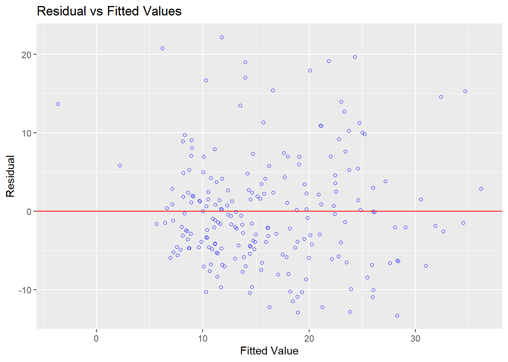
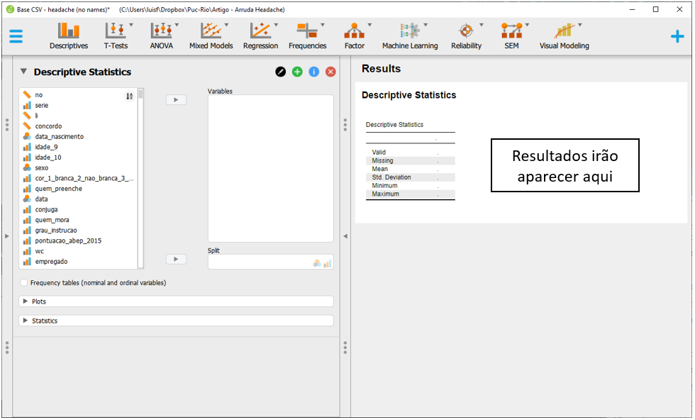
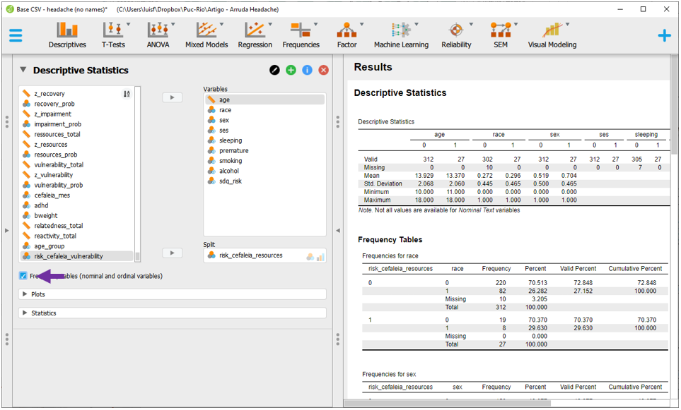
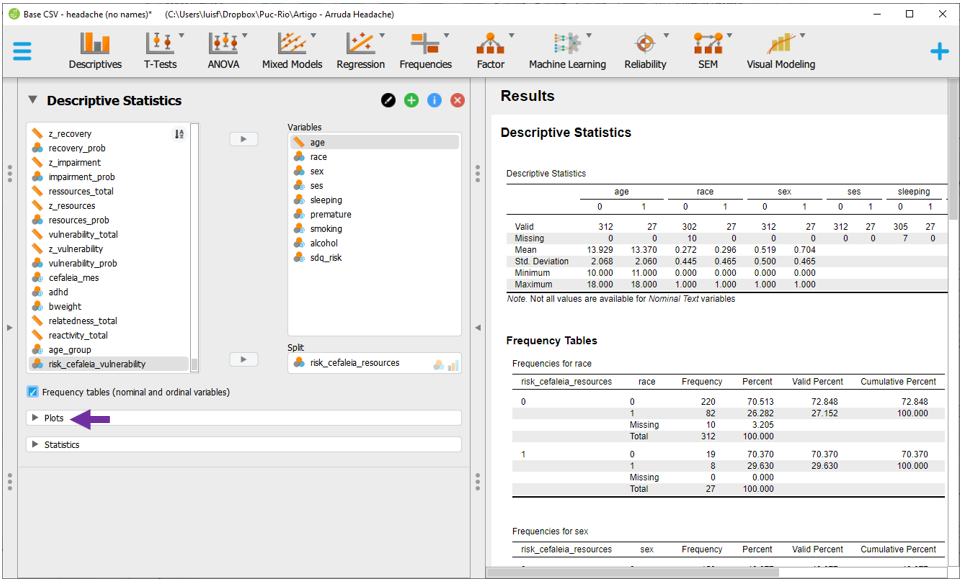
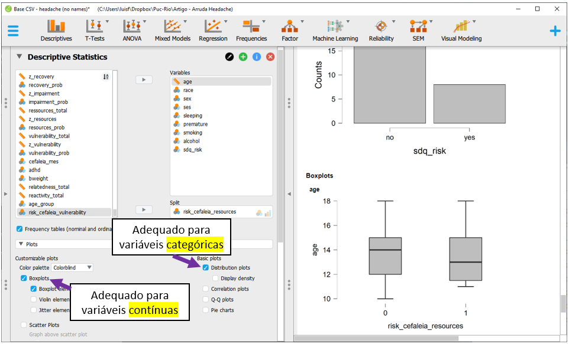
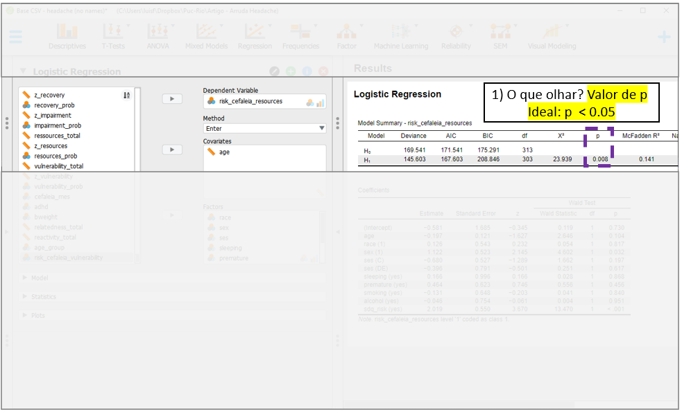
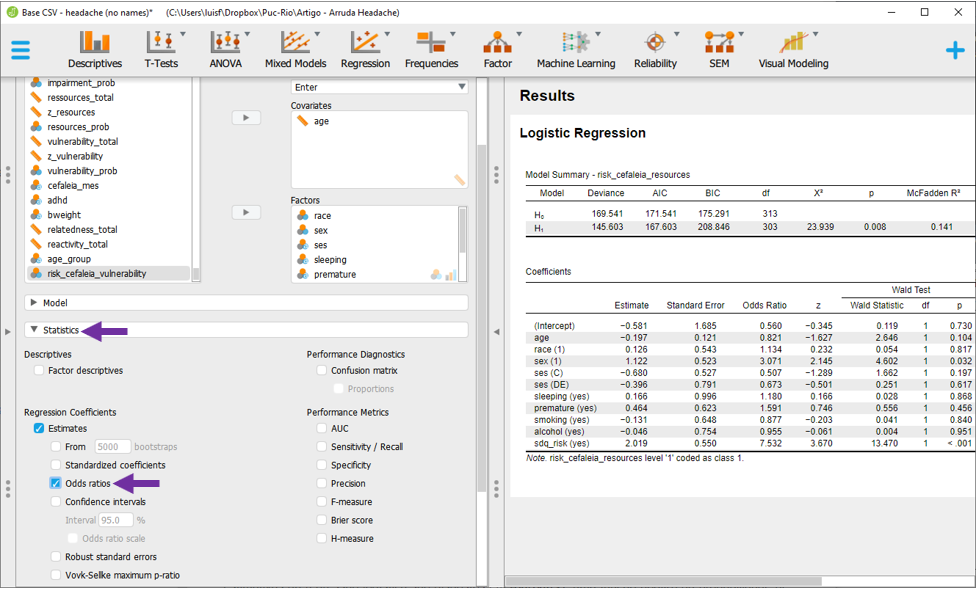

Cap. 18 Regressão logística binária
Objetivos do capítulo
1. Apresentar características da regressão logística
2. Diferenciar o conceito de probabilidade e chance
3. Integrar o teste Qui-quadrado, Odds Ratio e regressão logística
GLOSSÁRIO
Modelo Linear Generalizado: Classe de modelos compostos por uma função de ligação, preditores lineares e uma distribuição de probabilidades. São ampliações de modelos lineares.
Função de ligação: Termo que associa os valores esperados da resposta aos preditores lineares no modelo.
Logit: Uma função de ligação que transforma probabilidades em chances.
Risco: Probabilidade ou proporção.
Chance ou Odds: Caso particular de uma razão em que o numerador não está contido no denominador. Tradução para Odds.
Razão de Chances ou Odds Ratio: Medida de tamanho de efeito que indica a chance de ocorrência de um desfecho em um grupo quando comparado a outro. Seus valores variam entre 0 e infinito.
A regressão logística é um modelo estatístico que permite estimar a chance da ocorrência de um determinado desfecho categórico (Y) em função de um ou mais preditores (X), que podem ser contínuos ou categóricos. Quando a variável dependente apresenta apenas dois níveis ou classes, a regressão é chamada de binária. Quando há mais níveis ou classes, é chamada de multinomial.
Desta maneira, é possível entender a regressão logística como um complemento da regressão linear aplicada a variáveis categóricas a partir de uma função de ligação, uma generalização do teste Qui-quadrado ou, de maneira geral, um caso particular da família dos modelos lineares generalizados (GLM), que implementa uma ligação logit.
Conceitualmente, neste modelo há os seguintes termos:
\[\overbrace{y}^{VD} = \underbrace{ln\left ( \frac{P}{1-P} \right)}_\text{logit} \\= b_0+b_1X_1+ \dots + b_iX_i\]
Onde:
\(P\) representa a probabilidade de um desfecho ocorrer
\(1-P\) representa a probabilidade de um desfecho não ocorrer
\(ln\left ( \frac{P}{1-P} \right)\) representa uma transformação logit variável dependente
\(b_0\) é o intercepto
\(b_i\) indica os preditores
Os seguintes pressupostos devem ser investigados:
(i) Os dados são aleatórios e representativos da população
(ii) A variável dependente é dicotômica/binária
(iii) Os preditores não apresentam alta correlação entre eles
(iv) Há uma relação linear entre preditores contínuos e o logit do desfecho
Há muitas pesquisas em que modelos logísticos são utilizados. Em áreas de saúde, eles tendem a ser os modelos de primeira escolha para verificar condições clínicas e de agravo à saúde. Em Psicologia, por exemplo, ele é útil para descrever e investigar os possíveis preditores de condições diagnósticas bem definidas, tal como TDAH e outros transtornos psiquiátricos. Em epidemiologia, eles são fundamentais em estudos do tipo caso-controle.
Algumas condições são importantes:
- A variável dependente nesta equação é uma transformação logit do desfecho. Ela não é, por definição, uma probabilidade, mas sim uma função.
- Não há a definição de um termo de erro (tal como nos modelos de regressão linear) e
- O desfecho é assumido seguir uma distribuição Bernoulli.
Essas características fazem com que os resultados da regressão logística informem sobre chances (Odds) e Razão de chances (Odds Ratio) e não sobre probabilidades (Riscos), diretamente. Existem muitas formas de demonstrar esta diferença. Entretanto, a forma mais simples é por sua estrutura matemática.
Uma probabilidade é uma razão entre uma parte contra o todo (Tudo o que tenho sobre tudo o que posso quero, em jargão pedagógico). Quando se fala sobre riscos, implicitamente está se falando sobre probabilidades. Por sua vez, a chance é uma razão em que o numerador é uma probabilidade e o denominador é seu complemento. A figura a seguir ilustra essa diferença.

É legítimo ter dificuldade na interpretação do conceito, além de questionar o motivo pelo qual ele é tão utilizado nestas áreas, o que será apresentado ao fim do capítulo. No entanto, é importante perceber que quanto maior for a probabilidade, maior também serão as chances de um determinado evento e vice-versa. A relação entre ambos tem o seguinte formato.

Por sua vez, a Razão de chances (Odds Ratio ou OR) é uma medida de tamanho de efeito que se dá pela comparação entre dois grupos. Para computá-la, é necessário verificar a chance do desfecho ocorrer em cada um dos grupos e, em seguida, dividir os resultados.
Como em áreas de saúde, quase sempre, o interesse é verificar situações clínicas, quanto maior for o OR, maior será a chance da ocorrência de um desfecho negativo em um determinado grupo em comparação à outra e, consequentemente, maior será o risco.
A tabela a seguir apresenta aos principais resultados de OR e suas interpretações:
| Chance | Probabilidade | Interpretação |
|---|---|---|
| < 1 | < 50% | Fator de risco |
| = 1 | 50% | Fator neutro |
| > 1 | > 50% | Fator de proteção |
18.1 Pesquisa
A base desta pesquisa está disponível em formato R (Rdata) e em CSV, que é lido pelo JASP. Clique na opção desejada.
Base R: Base R - Headache anonymous
Base JASP: Base CSV - headache (no names)
Neste capítulo, vamos utilizar a pesquisa intitulada “Resilience and vulnerability in adolescents with primary headaches: a cross-sectional population-based study”, publicada em 2021 no Headache, que sou coautor.
Essa é uma pesquisa censitária, que contou com todos os 339 estudantes de uma cidade pequena no interior do Brasil. O estudo visou mapear as possíveis condições de apresentar baixos recursos psicológicos em adolescentes portadores de enxaqueca de diferentes tipos e intensidades. Na literatura médica internacional, são raros os estudos com finalidade epidemiológica descritiva sobre enxaqueca. No Brasil, por sua vez, este nosso estudo foi o primeiro. Esse fato marcou o caráter inovador da pesquisa e também permitiu impactar positivamente o trabalho de clínicos que, em seu dia a dia, lidam com jovens com tais características.
Para definir o tipo e a frequência da dor de cabeça, os participantes responderam a diferentes questionários médicos. Por sua vez, para verificar o possível baixo recurso psicológico, eles foram submetidos à escala Resiliency Scales for Children and Adolescents, que foi desenvolvida justamente para medir esta condição.
Um dos objetivos que tivemos na execução das análises foi verificar quais eram os preditores significativos que poderiam impactar na apresentação (ou não) de baixos recursos psicológicos. Os preditores de interesse foram a idade da criança (age), sua etnia (race), sexo (sex), classe socioeconômica (ses), problemas de sono (sleeping), prematuridade (premature), fumo durante a gestão (smoking), uso de álcool durante a gestação (alcohol) e possível TDAH (sdq_risk).
Para isso, modelos de regressão logística binária foram utilizados.
18.2 Execução no R
Inicialmente, é necessário carregar a base de dados ao R. Após isso feito, a apresentação de tabelas e gráficos auxilia na interpretação dos resultados. De maneira similar à feita em outros capítulos, abaixo há uma tabela descritiva feita com o pacote arsenal.
arsenal::tableby(risk_cefaleia_resources ~
age + race + sex + ses + sleeping + premature +
smoking + alcohol + sdq_risk,
test = FALSE,
base_uso) %>%
summary() | 0 (N=312) | 1 (N=27) | Total (N=339) | |
|---|---|---|---|
| age | |||
| Mean (SD) | 13.929 (2.068) | 13.370 (2.060) | 13.885 (2.070) |
| Range | 10.000 - 18.000 | 11.000 - 18.000 | 10.000 - 18.000 |
| race | |||
| N-Miss | 10 | 0 | 10 |
| white | 220 (72.8%) | 19 (70.4%) | 239 (72.6%) |
| Other | 82 (27.2%) | 8 (29.6%) | 90 (27.4%) |
| sex | |||
| Male | 150 (48.1%) | 8 (29.6%) | 158 (46.6%) |
| Female | 162 (51.9%) | 19 (70.4%) | 181 (53.4%) |
| ses | |||
| AB | 83 (26.6%) | 10 (37.0%) | 93 (27.4%) |
| C | 189 (60.6%) | 14 (51.9%) | 203 (59.9%) |
| DE | 40 (12.8%) | 3 (11.1%) | 43 (12.7%) |
| sleeping | |||
| N-Miss | 7 | 0 | 7 |
| no | 296 (97.0%) | 25 (92.6%) | 321 (96.7%) |
| yes | 9 (3.0%) | 2 (7.4%) | 11 (3.3%) |
| premature | |||
| N-Miss | 4 | 2 | 6 |
| no | 272 (88.3%) | 21 (84.0%) | 293 (88.0%) |
| yes | 36 (11.7%) | 4 (16.0%) | 40 (12.0%) |
| smoking | |||
| N-Miss | 1 | 1 | 2 |
| no | 243 (78.1%) | 20 (76.9%) | 263 (78.0%) |
| yes | 68 (21.9%) | 6 (23.1%) | 74 (22.0%) |
| alcohol | |||
| N-Miss | 2 | 1 | 3 |
| no | 278 (89.7%) | 23 (88.5%) | 301 (89.6%) |
| yes | 32 (10.3%) | 3 (11.5%) | 35 (10.4%) |
| sdq_risk | |||
| no | 287 (92.0%) | 19 (70.4%) | 306 (90.3%) |
| yes | 25 (8.0%) | 8 (29.6%) | 33 (9.7%) |
Essa tabela oferece uma primeira informação sobre os dados. Gráficos também poderiam ser feitos com a mesma finalidade.
Os resultados apresentados nas tabelas são úteis e permitem calcular vários testes Qui-quadrado de independência, gerando um indicador útil sobre o perfil de associação entre cada uma das variáveis, quando elas são categóricas. Entretanto, os resultados obtidos por este teste indicariam apenas o possível relacionamento bivariado sem, no entanto, controlar os resultados por todas as outras variáveis de interesse, uma vez que elas não foram analisadas todas em conjunto.
Apesar de ser possível fazer alguns ajustes particulares ou utilizar o teste de Cochran–Mantel–Haenszel, a regressão logística é a modelagem mais adaptada para lidar com esta situação. Esta modelagem permite analisar todas as variáveis simultaneamente e também incluir preditores contínuos.
Para executar esse tipo de regressão no R, é necessário usar a função nativa glm e definir a família como binomial. Isso indicará que o desfecho é binário e que a função logit deverá ser implementada na equação.
O vetor mod_risco será criado e reunirá os resultados do modelo de regressão logística.
mod_risco <- glm(risk_cefaleia_resources ~
age + race + sex + ses + sleeping + premature +
smoking + alcohol + sdq_risk,
family = "binomial",
data = base_uso)Há muitas formas de apresentar os resultados e o pacote sjPlot tem bons recursos para isso. A função tab_model produz uma tabela com o Odds Ratio de cada preditor, seu intervalo de confiança, a estatística de teste, o valor de P, bem como a quantidade de observações utilizada e uma medida de ajuste (\(R^2\)).
sjPlot::tab_model(mod_risco, show.stat = TRUE)| risk cefaleia resources | ||||
|---|---|---|---|---|
| Predictors | Odds Ratios | CI | Statistic | p |
| (Intercept) | 2.51 | 0.08 – 86.90 | 0.52 | 0.605 |
| age | 0.82 | 0.64 – 1.03 | -1.63 | 0.104 |
| race [1] | 1.07 | 0.60 – 1.78 | 0.23 | 0.817 |
| sex [1] | 1.75 | 1.08 – 3.06 | 2.15 | 0.032 |
| ses [1] | 0.71 | 0.42 – 1.20 | -1.29 | 0.197 |
| ses [2] | 0.98 | 0.58 – 1.51 | -0.08 | 0.938 |
| sleeping [1] | 1.09 | 0.36 – 2.66 | 0.17 | 0.868 |
| premature [1] | 1.26 | 0.64 – 2.23 | 0.75 | 0.456 |
| smoking [1] | 0.94 | 0.47 – 1.71 | -0.20 | 0.840 |
| alcohol [1] | 0.98 | 0.43 – 1.94 | -0.06 | 0.951 |
| sdq_risk [1] | 2.74 | 1.59 – 4.73 | 3.67 | <0.001 |
| Observations | 314 | |||
| R2 Tjur | 0.101 | |||
A interpretação dos resultados costuma ser feita de maneira gradual, em que cada elemento é apresentado e discutido.
Inicialmente, é importante verificar se o modelo testado é significativamente mais informativo do que um modelo nulo. Isso é feito por uma estatística de desvio (Deviance) e pelos critérios de informação de Akaike e Bayesiano. Por padrão, esta tabela assume esta condição, mas não a apresenta formalmente. Isso pode ser feito pela função nativa anova, tal como demonstrado a seguir. É importante ter atenção que esse tipo de diagnóstico é particularmente importante em modelos com menos variáveis.
#criar um null model
mod_nulo <- base_uso %>%
filter(across(c(age,race,sex,ses,sleeping,premature,
smoking,alcohol,sdq_risk), ~!is.na(.x))) %>%
glm(risk_cefaleia_resources ~ 1, family = "binomial", data = .)
#comparar modelos
anova(mod_nulo, mod_risco, test = "LRT")O segundo momento é relacionado à análise do \(R^2\), disposto na parte inferior da tabela. Existem diferentes maneiras de calculá-lo e sua interpretação não é exatamente igual à feita na regressão linear. Enquanto na regressão linear, o \(R^2\) se refere à proporção da variância explicada, em modelos logísticos, no geral, o \(R^2\) indica o quanto o modelo testado é próximo de um modelo com ajuste perfeito aos dados (saturado) (Portugues, 2020).
O \(R^2 \, de \, Tjur\) é a medida utilizada nesta apresentação e seus valores variam entre 0 e 1. Ele computa a diferença entre os dados e os valores previstos pelo modelo testado. Quão maior o valor, mais discriminativo é o modelo testado. Neste caso, o o \(R^2 \, de \, Tjur\) foi de 0.10. Não há uma regra geral para interpretar o \(R^2\). Em Psicologia, por exemplo, é bastante difícil que ele chegue a 0.5.
A terceira interpretação é baseada nos Odds Ratio (OR) e sugere alguma com atenção: o OR indica a chance de ocorrência de um desfecho caso o preditor analisado tenha ocorrido, em comparação com sua não ocorrência. Ele não indica diretamente sobre a probabilidade, apesar disso ser possível de ser feito.
Os preditores sex[female] e sqd_risk foram significativos. A interpretação pode ser feita da seguinte maneira:
- A chance do participante vir a apresentar baixo recurso psicológico é 3.07 maior em meninas do que em meninos.
- A chance do participante vir a apresentar baixo recursos psicológico é 7.53 maior em participantes com TDAH do que em participantes sem TDAH.
Eventualmente, variáveis contínuas também podem ser significativas. Caso a variável age tivesse sido significativa, sua interpretação poderia ser:
- O aumento de 1 ano de idade impacta a chance de vir a apresentar baixos recursos psicológicos em 0.82, indicando uma característica protetiva.
É importante ter em mente que esses resultados são baseados nas observações válidas. Por definição, o R não utiliza casos ausentes, o que ocasionou uma redução de 7% das observações (de 339 para 314, neste caso). É provável que os achados fossem diferentes caso estratégias de imputação de casos ausentes tivessem sido implementadas.
De maneira análoga a outros modelos estatísticos, a apresentação dos resultados é muito beneficiada por gráficos, o que é feito pelo Forest plot neste caso. Neste gráfico, o eixo horizontal apresenta os valores possíveis de OR (\(0-\infty\)) e é centralizado em 1. O eixo vertical lista todos os preditores analisados e seus intervalos de confiança. A interpretação é feita ancorada no valor 1, que quando está contida no intervalo de um determinado resultado, indica que os resultados não são significativos. Valores de OR acima de 1 se situam à direita e indicam um possível fator de risco. Valores de OR abaixo de 1 se situam à esquerda e indicam um possível fator protetivo.
sjPlot::plot_model(mod_risco,
grid = FALSE,
show.values = TRUE, value.offset = .3,
colors = "bw",
vline.color = "darkgray") +
scale_x_discrete(labels = function(x) str_wrap(x, width = 10)) +
theme_bw() +
theme(legend.position = "top")
Caso haja interesse, é também possível computar as probabilidades e adicioná-las à tabela aplicando \(Odds/(1+Odds)\). Ao fazer isso, uma nova informação será apresentada e poderá ter alguma utilidade para interpretar preditores variáveis categóricas. Tradicionalmente, isso não é feito.
Atenção: A validade das inferências dos resultados depende da adequação ou não dos pressupostos dos testes estatísticos. A avaliação destas condições é parte de um procedimento diagnóstico que deve ser sempre feito.
Um aspecto importante é que a validade da interpretação dos resultados depende dos pressupostos do modelo estatístico. A violação destes pressupostos distorce, limita ou invalida as interpretações teóricas propostas, uma vez que tanto o aumento do erro do tipo 1 (falso positivo), como do tipo 2 (falso negativo) podem ocorrer (Barker & Shaw, 2015; Ernst & Albers, 2017; Lix et al., 1996). Corriqueiramente, testar os pressupostos é uma etapa anterior à própria realização do teste inferencial. Entretanto, pedagogicamente a apresentação deles após a execução do teste parece mais adequada. Assim, eles serão testados a seguir.
Multicolinearidade: A multicolinearidade pode ser investigada pela análise chamada Variance Inflaction Factor (VIF). Essa análise verifica o quão correlacionados são os preditores e gera um resultado numérico. Valores abaixo de 4 são tipicamente utilizados para indicar que os preditores não são fortemente correlacionados e, consequentemente, considerar este pressuposto atendido.
car::vif(mod_risco) %>% pander()| GVIF | Df | GVIF^(1/(2*Df)) | |
|---|---|---|---|
| age | 1.035 | 1 | 1.017 |
| race | 1.112 | 1 | 1.055 |
| sex | 1.078 | 1 | 1.038 |
| ses | 1.294 | 2 | 1.067 |
| sleeping | 1.17 | 1 | 1.082 |
| premature | 1.017 | 1 | 1.009 |
| smoking | 1.365 | 1 | 1.168 |
| alcohol | 1.155 | 1 | 1.075 |
| sdq_risk | 1.162 | 1 | 1.078 |
Relação linear entre preditores contínuos e o logit: A regressão logística assume que há um relacionamento linear entre os preditores contínuos e o desfecho logit. O pacote sjplot também pode ser utilizado para testar este pressuposto. Não há um teste formal específico para este pressuposto e a decisão é baseada na visualização deste relacionamento.
sjPlot::plot_model(mod_risco, type = "pred", terms = "age")
O gráfico não sugere desvio da linearidade. Com isso, esse pressuposto é também considerado mantido.
Após essas análises, é possível interpretar os resultados.
18.3 Execução no JASP
Inicialmente, é necessário carregar a base intitulada “Base CSV - headache (no names)” para o ambiente JASP. Essa base apresenta as variáveis que foram pesquisadas, bem como um conjunto de variáveis auxiliares que serviram para responder a outras perguntas.
A apresentação de tabelas e gráficos é sempre muito importante e pode ser feito ao clicar na opção Descriptives.

Ao clicar nesta opção, a interface do JASP ser próxima à exposta a seguir. É possível eleger as variáveis que irão ser analisadas e as variáveis que irão funcionar como agrupadores.

Neste caso, o interesse é agrupar os resultados em função de apresentar baixos recursos psicológicos. Neste sentido, a variável risk_cefaleia_resources deve ser inserida na parte Split e as variáveis age, race, sex, ses, sleeping, premature, smoking, alcohol e sdq_risk deverão ser inseridas em Variables.
Para a apresentação ficar adequada à escala de medida, é necessário marcar a opção Frequency tables (nominal and ordinal variables), na parte inferior esquerda da interface.

A tabela apresentada será bastante informativa e poderá ser utilizada também para uma apreensão inicial dos dados. Variáveis contínuas serão resumidas por suas médias e desvios-padrão e variáveis categóricas serão apresentadas por contagens e proporções.
Gráficos tendem a ser úteis também para verificar o formato da distribuição dos dados. o JASP permite realizá-los clicando em Plots.

Como há variáveis contínuas (age) e variáveis categóricas (sex, etc) o ideal é apresentar tanto boxplots como gráficos de barras. Ao clicar na opção Boxplot e Distribution plots, o JASP irá realizar todos os gráficos e apresentá-los ao lado direito.

A análise conjunta da tabela previamente realizada e dos gráficos pode ser feita. Apesar deste procedimento inicial não ser uma etapa fundamental, ele tem sua aplicação para apresentar resultados descritivos da amostra.
Com isto feito, é possível fazer a regressão logística.
Para execução da regressão logística, será necessário clicar em Regression e Logistic Regression.

A tela do JASP irá apresentar algumas opções. O local Dependent variables é onde a VD será inserida. Repare que o JASP somente permitirá inserir uma única variável nominal ou ordinal neste espaço. Covariates é o local onde as VIs contínuas serão colocadas e Factors é onde as VIs categóricas serão colocadas.

Para realizar o modelo, será necessário levar a risk_cefaleia_resources para Dependent Variable. Em seguida, age para seção Covariates e race, sex, ses, sleeping, premature, smoking, alcohol e sdq_risk para Factors. Ao fazer isso, o JASP irá fazer as principais análises e apresentar os resultados em uma tabela específica, ao lado direito da tela.

É fácil notar que os resultados apresentados são muitos. É recomendado uma ordem específica para interpretá-los.
Em primeiro momento, é importante verificar o ajuste do modelo na seção Model summary, na parte superior dos resultados. O JASP compara o modelo ajustado H1 contra um modelo nulo H0 em uma métrica de desvio (Deviance) e pelos critérios de informação de Akaike (AIC) e Bayesiano (BIC). De maneira similar à regressão linear, H0 representa o modelo mais simples possível (sem preditores) e H1 representa o modelo com os preditores que estão sendo testados. Valores de P e resultados baixos dos critérios AIC e BIC são utilizados como guias de decisão sobre o melhor modelo.
A síntese desses resultados indica que o modelo testado é mais informativo que o modelo nulo, uma vez que o valor de P foi de 0.008 e o AIC do modelo testado foi inferior, apesar do BIC ter sido superior.

O segundo momento consiste na interpretação de uma métrica análoga ao \(R^2\) de modelos de regressão linear. Na seção Model summary, o JASP apresenta algumas opções de uso. Existem debates na literatura sobre qual resultado é o mais indicado e, cada vez mais, o \(R^2 \, de \, Tjur\) tem sido escolhido. Essa é uma métrica 0-1 que é computada verificando as diferenças médias dos resultados obtidos pelo modelo nulo e pelo modelo testado. Independentemente do \(R^2\) escolhido, é importante ter claro que os valores do \(R^2 {Cox\,\& \,Snell}\) não estão contido no intervalo 0-1, o que gera dificuldade em sua interpretação. No modelo testado, o \(R^2 \, de \, Tjur\) foi de 0.101. Não há uma regra geral para interpretar o \(R^2\). Em Psicologia, por exemplo, é bastante difícil que ele chegue a 0.5.

O terceiro momento é a análise das estimativas obtidas em cada um dos preditores listados na seção Coefficients. No entanto, o JASP apresenta o log(odds) dos resultados, cuja interpretação é pouco intuitiva. Desta maneira, é necessário adicionar o Odds Ratio à tabela. Para fazer isso, ao lado esquerdo da interface, é necessário clicar em Statistics e, em seguida Odds Ratio.

O Odds Ratio será adicionado à tabela. Agora, cada um dos preditores poderá ser analisado individualmente, com interpretação levando em consideração o OR e os valores de P.

A interpretação do Odds Ratio (OR) precisa ser feita com atenção: ele indica a chance de ocorrência de um desfecho caso o preditor analisado tenha ocorrido, em comparação com sua não ocorrência. Esses valores não indicam diretamente sobre a probabilidade de um desfecho, apesar disso poder ser feito.
Os preditores sex[1 - Mulheres] e sqd_risk foram significativos. A interpretação pode ser feita da seguinte maneira:
- A chance do participante vir a apresentar baixo recurso psicológico é 3.07 maior em meninas do que em meninos.
- A chance do participante vir a apresentar baixo recursos psicológico é 7.53 maior em participantes com TDAH do que em participantes sem TDAH..
Eventualmente, variáveis contínuas também podem ser significativas. Caso a variável age tivesse sido significativa, sua interpretação poderia ser:
- O aumento de 1 ano de idade impacta a chance de vir a apresentar baixos recursos psicológicos em 0.82, indicando uma característica protetiva.
Atenção: A validade das inferências dos resultados depende da adequação ou não dos pressupostos dos testes estatísticos. A avaliação destas condições é parte de um procedimento diagnóstico que deve ser sempre feito.
Uma vez que o modelo já foi realizado, a interpretação dos resultados depende da adequação de seus pressupostos. A violação destes pressupostos distorce, limita ou invalida as interpretações teóricas propostas, uma vez que tanto o aumento do erro do tipo 1 (falso positivo), como do tipo 2 (falso negativo) podem ocorrer (Barker & Shaw, 2015; Ernst & Albers, 2017; Lix et al., 1996). Corriqueiramente, testar os pressupostos é uma etapa anterior à própria realização do teste inferencial. Entretanto, pedagogicamente a apresentação deles após a execução do teste parece mais adequada.
Nesta versão do JASP, não há testes formais para verificar a multicolinearidade, mas há para verificar a relação linear entre o logit e preditores contínuos. Para realizar esta análise, é necessário clicar em Plots, na parte esquerda da interface.

Um conjunto de opção irá ser exibida. É necessário marcar Inferential Plots e Display conditional estimates plots. O JASP irá fazer gráficos individuais para cada preditor. No entanto, é importante olhar apenas o relacionamento entre os preditores contínuos (por exemplo, age) e o desfecho. O ideal é que haja um relacionamento linear entre ambos, tal como ocorre neste caso.

Dentre as análises possíveis em regressão logística, o JASP também oferece o cálculo de algumas medidas de performance, tal como acurácia e curva ROC. Apesar delas não serem abordadas neste momento, elas são especialmente importantes quando se deseja comparar modelos de regressão.
Após essas análises, é possível interpretar os resultados.
18.4 Escrita dos resultados
De uma forma geral, o principal achado do modelo de regressão logística é que a chance de mulheres e participantes com TDAH apresentarem baixos recursos psicológicos é significativamente maior do que seus pares homens e pessoas sem TDAH. Essas condições possuem uma grande importância em áreas de saúde, uma vez que elas permitem que clínicos não apenas entendam melhor o fenômeno, como também possam mapear as possíveis condições que o mantém. Abaixo uma sugestão de escrita baseada nas recomendações da American Psychological Association (APA).
Como escrever os resultados
Um modelo de regressão logística foi conduzido para verificar os efeitos de diferentes condições sociais, ambientas e psicológicas na chance dos participantes apresentarem baixos recursos psicológicos. O modelo foi estatisticamente significativo (X2(308) = 21.229, p = 0.007, \(R^2\) = 0.10) e indicou que mulheres - em comparação com os homens - têm uma chance 3.07 maior de apresentarem tal condição (OR = 3.07, p = 0.032). Participantes com TDAH apresentam uma chance 7.53 maior de apresentarem tal desfecho (OR = 7.53, p < 0.001), quando comparados àqueles sem TDAH. Dessa forma, ambas as características são fatores de risco à apresentação de baixos recursos psicológicos.
18.5 Regressão logística, OR e Qui-quadrado
Conforme apresentado em capítulos anteriores, o teste Qui-quadrado é um caso particular do modelo de regressão logística em que há uma única variável independente categórica. Além disso, o Odds Ratio é uma medida de efeito que costuma ser obtida pela mesma tabela de contingência em que o teste Qui-quadrado é calculado.
Para demonstrar este conceito, a relação entre o sexo do participante (Masculino ou Feminino) e estar em risco de baixo recurso psicológico (sim ou não) será modelada.
Inicialmente, a tabela de contingência descreve o relacionamento entre as variáveis.
| sex | 0 | 1 | Total |
|---|---|---|---|
| Male | 95% (150) | 5% (8) | 100% (158) |
| Female | 90% (162) | 10% (19) | 100% (181) |
| Total | 92% (312) | 8% (27) | 100% (339) |
Essa tabela é particularmente útil e permite explorar possíveis associações entre as variáveis utilizando o teste Qui-quadrado de independência. Os resultados foram significativos, \(X^2(1) = 3.398, p = 0.065\), indicando pela associação entre sexo e risco. No entanto, como o Qui-quadrado não trabalha com o conceito de variável independente e dependente, seus resultados não indicam em quais células os valores esperados e observados são significativamente diferentes.
Por esta mesma tabela, é possível calcular a chance (Odds) de um participante do sexo masculino estar no grupo de risco:
\[8/150 = 0.053\]
Bem como a chance (Odds) de um participante do sexo feminino estar estar no grupo de risco:
\[19/162 = 0.117\]
Os resultados obtidos às mulheres são superiores ao dos homens. Isso sugere que elas apresentam uma chance consideravelmente maior de estarem nesta esta condição negativa quando comparadas aos homens. O cálculo do Odds Ratio, neste sentido, é fundamental para indicar o quão maior é a chance. Como o nome indica, a conta é feita pela razão entre as chances, que indica OR = 2.2.
\[{\overbrace{\left ( \frac{19}{162}\right)}^\text{Odds Mulheres}}/{\underbrace{\left ( \frac{8}{150} \right)}_\text{Odds Homens}} \approx 2.2\]
Esses dois resultados são importantes, mas seriam interpretados separadamente. Eles concluiriam que existe uma associação significativa (com \(\alpha < 0.1\)) entre o sexo do participante e apresentar baixos recursos psicológicos, bem como uma chance aumentada das mulheres apresentarem baixos recursos psicológicos quando comparados aos homens.
Ao modelar esses dados por uma regressão logística, essas duas análises são feitas simultaneamente Neste sentido, a regressão (1) realiza um teste Qui-quadrado de independência, com a particular vantagem de definir claramente uma variável independente e outra dependente, bem como (2) computa os OR dos preditores e testa sua significância estatística. Conceitualmente:
\[\underbrace{ln\left ( \frac{Risco}{1-Risco} \right)}_\text{logit} = b_0 + b_1X_{sexo}\]
base_uso %>%
mutate(risk =
if_else(risk_cefaleia_resources == "0",0,1)) %>% #nuneric for poisson
count(risk, sex) %>%
{glm(n ~ risk * sex, data = .,family = poisson())} %>%
anova(., test = 'Rao') %>%
pander()| Df | Deviance | Resid. Df | Resid. Dev | Rao | Pr(>Chi) | |
|---|---|---|---|---|---|---|
| NULL | NA | NA | 3 | 286.6 | NA | NA |
| risk | 1 | 281.5 | 2 | 5.076 | 239.6 | 4.801e-54 |
| sex | 1 | 1.562 | 1 | 3.514 | 1.56 | 0.2116 |
| risk:sex | 1 | 3.514 | 0 | 3.864e-14 | 3.398 | 0.06527 |
A tabela a seguir apresenta o ajuste deste modelo de regressão (risk*sex: 3.398), que foi o mesmo valor encontrado na estatística de teste do Qui-quadrado. O valor de P é também o mesmo (\(0.065\)).
Por sua vez, o Odds Ratio calculado previamente pela tabela de contingência também é encontrado na tabela de resultados da regressão logística ao se fazer \(\exp(b)\). O exponencial, eventualmente, é também chamado de antilogaritmo.
| Preditor | Estimate | OR |
|---|---|---|
| (Intercept) | -2.5 | 0.1 |
| sex1 | 0.4 | 1.5 |
18.6 Resumo
- A regressão logística permite modelar variáveis categóricas, sejam elas binárias ou ordinais
- A variável dependente desta regressão é uma função (logit) e não uma probabilidade
- A interpretação desta regressão costuma ser feita pelo conceito de Razão de chances (Odds Ratio)
- O Qui-quadrado é um caso particular de uma regressão logística com uma única VI categórica
18.7 Pesquisas adicionais
Cardiovascular Disease in Patients With Schizophrenia in Saskatchewan, Canada (DOI: 10.4088/JCP.v65n0519)
Esta é uma pesquisa de larga escala, feita para verificar a prevalência de problemas cardiológicos em pacientes portadores de esquizofrenia. O estudo utilizou pesadamente modelos de regressão logística e Odds ratio para verificar as diferentes características que impactam em problemas cardiológicos, bem como estimar o tamanho do efeito que estas características possuem.Predictive model and determinants of under-five child mortality: evidence from the 2014 Ghana demographic and health survey (DOI: 10.1186/s12889-019-6390-4)
Este estudo visou identificar os preditores relacionados à sobrevivência/mortalidade infantil em Gana, um país africano. O modelo da regressão logística foi utilizado e entre os preditores relacionados à maior chance de sobrevivência estão o sexo da criança e a escolaridade da mãe. Meninas e filhos(as) de mães não-analfabeta tem chance maior de sobrevivência.
18.8 Questões
(Retirado de Andy Field - Dicovering statistics) A regressão logística assume entre seus pressupostos
a) Relacionamento linear entre os preditores contínuos e a variável resposta.
b) Relacionamento linear entre os preditores contínuos e o logit da variável resposta.
c) Relacionamento linear entre os preditores contínuos.
d) Relacionamento linear entre todas as observações.
e) Todas as opções são incorretas.(Retirado de Analista de Tecnologia da Informação Análise de Informações, DATAPREV, COSEAC, 2008). Em uma regressão logística múltipla, se uma variável explicativa Xi é dicotômica, seu coeficiente pode ter uma interpretação especial: a razão de chance (odds ratio) estimada da resposta para dois níveis possíveis de Xi. Pode- se definir a razão de chance como: a) antilogaritmo de Xi.
b) logaritmo de Xi.
c) razão entre X1/X2.
d) soma dos quadrados de Xi.
e) razão entre Xi/ exp(Xi)(Retirado de FUB, CESPE, 2010) Em um estudo clínico utilizou-se um modelo de regressão logística em que y é a variável resposta, como preditor linear, a expressão a + bx + cz, em que x = 0 para o grupo placebo e x = 1 para o grupo de tratamento; z é uma medida de colesterol (em escala de 0 a 5) antes do início do tratamento. Com base nessas informações, julgue os itens subsequentes).
A variável resposta y é binária.
a) Certo.
b)Errado.
Gabarito: 1-b;2-a;3-a